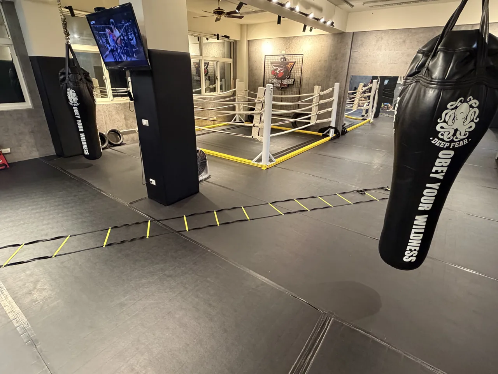

新竹泰拳費用比較團課與私人課體驗價格一次看
新竹學泰拳要準備多少預算，先分清團課與私人課的體驗價格。整理 HCF 團課 NT$400、一對一 NT$1,400、一對二與兩堂體驗的差異，以及月費、會員資格和實際到課成本的確認方法。
HCF 泰拳體驗價格整理
以下資料於 2026 年 11 月 26 日核對 HCF 官網價目表。這是 HCF 自身的課程資訊，並非所有新竹拳館的市場均價。正式預約前，請再確認體驗資格及當時公告。
| 體驗方式 | 人數與堂數 | 每堂時間 | 合計費用 |
|---|---|---|---|
| 新生團課體驗 | 一人一堂 | 60 分鐘 | NT$400 |
| 一對一體驗 | 一人一堂 | 60 分鐘 | NT$1,400 |
| 一對一深度體驗 | 一人兩堂 | 60 分鐘 | NT$2,400 |
| 一對二體驗 | 兩人一起一堂 | 60 分鐘 | 兩人 NT$2,400 |
手機可左右滑動查看完整表格
團課與私人課的教學形式不同，不能只看較低的總價就推定比較適合。先看最新課表能否配合，再參考團課與私人課的選擇方式。
兩堂一對一與一堂一對二怎麼分
一對一深度體驗是同一人安排兩堂，每堂 60 分鐘，合計 NT$2,400，換算每堂 NT$1,200。你需要確認兩次上課的時間與使用條件。
一對二體驗是兩人同上一堂 60 分鐘，合計 NT$2,400。若平均分攤，每人 NT$1,200，但兩人共享同一堂教學時間，不是各自上兩堂。
總額相同，服務人數與次數不同。預約時請說清楚是自己想分兩次體驗，還是希望和朋友一起來。兩人程度不同時，可先閱讀一對二私人課指南。
月方案要用實際出席次數估算
目前官網列出的團課包月為 NT$5,500，需臨櫃開卡。選擇月方案前，要確認可使用課別、會員資格、啟用與到期日期，以及預約規則。體驗後續的堂數方案與私人課費用，請向館方詢問，不宜把體驗價直接套用到長期上課。
以下只是預算試算，假設當期實際完成八堂且都符合方案使用條件，NT$5,500 除以八堂約為每堂 NT$688；若最後只完成四堂，平均為 NT$1,375。此算法尚未加入會員或其他必要費用，也不表示館方保證你能排到這些堂數。
比較時應使用方案總價加必要費用 再除以實際能完成的堂數。也要一起看每堂時間與教學形式，不能拿團課平均成本直接當作私人課服務價格。可先用每週訓練安排指南估算自己真正能到館幾次。
付款前一起確認這五項
- 適用資格 體驗是否限首次參加 哪些課程或方案需要會員資格
- 會員與開卡 是否另有費用 何時啟用 效期如何計算
- 裝備安排 拳套與手綁帶如何準備 借用或租借是否收費
- 課程使用 可以參加哪些課別 是否有人數或預約限制
- 取消與改約 需要提前多久通知 遲到或未到課如何處理
官網價格資訊標示團課、打靶課與團課包月需先具備 HCF 會員資格並臨櫃開卡。新生體驗是否另有適用安排，請預約時確認。未列出的會員費、長期私課價格或個別優惠，本篇不自行估價。
依需求選擇第一筆體驗預算
- 想先感受一起練習的節奏 可以先詢問新生團課體驗 並核對適合的課別與時間
- 希望教練集中看自己的問題 可以詢問一對一體驗 寫清楚最想學會或修正的內容
- 希望和熟悉的夥伴同行 可以詢問一對二體驗 先對齊兩人的目標和共同時間
- 只能白天或輪班休假上課 先確認私人課可約時段 再決定是否購買後續方案
如果白天比較方便，可看新竹日間私人課預約指南。如果正在衡量個別指導的價值，可看私人教練是否值得的評估方法。
先確認課程再安排到館
HCF 新竹格鬥位於新竹市北區林森路 301 號 2 樓。從第一堂體驗表單選擇課程偏好，填入方便時間、每週願意投入的天數，並在讓教練更了解我補上訓練目的細項。
想詢問私課可用私人課體驗入口。送出需求後，依畫面到官方 LINE 確認並傳送內容，等教練核對費用與時段。收到確認才完成預約，填寫需求不等於已購買或已排課。

常見問題
新竹泰拳體驗一定都是四百元嗎
不是。本篇 NT$400 是 HCF 的新生團課體驗價格。不同拳館、課型、人數與體驗資格可能不同，私人課也有自己的體驗費用。
一對二的兩千四百元是每人價格嗎
HCF 一對二體驗 NT$2,400 是兩人一起上一堂 60 分鐘的合計費用。若兩人平均分攤，每人 NT$1,200。
包月一定比按堂購買划算嗎
要看使用條件、必要費用與實際到課次數。先估算真的能出席幾次，再確認當期課表與預約規則，不宜只用理想中的上課次數計算。
第一次體驗需要先買拳套嗎
先向館方確認體驗裝備的借用或租借安排及費用，再決定是否購買個人裝備。不要把裝備費用預設為零，也不必只為了詢問體驗就先買齊。
延伸閱讀
先體驗適合你的上課方式
把預算 時間與目的寫清楚 由教練協助確認課程
課程資訊核對於 2026 年 11 月 26 日 查看最新價目表 可約時段與預約方式由教練確認